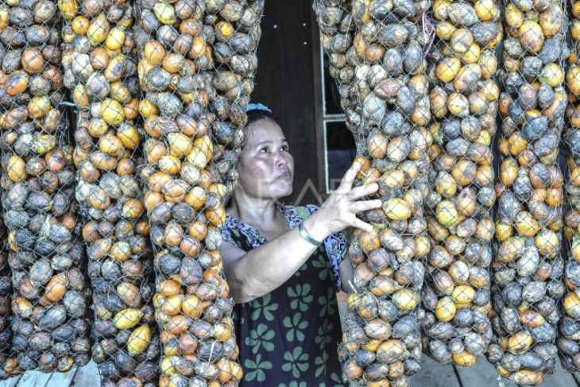
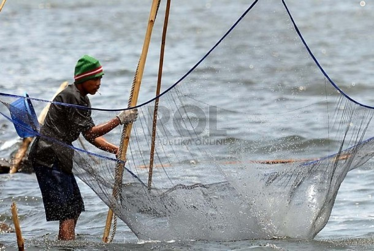

Profil Kelurahan
Geografis
Luas Wilayah: 47,88 km²
Batas Wilayah:
- Utara: Desa Tanjung Harapan
- Timur: Desa Kuala Gaung
- Selatan: Kecamatan Kuala Indragiri
- Barat: Desa Teluk Pantaian
Jelajahi lebih banyak Teluk Pinang
Peta Wilayah

Info Potensi

Perkebunan

Perairan
Statistik Kependudukan
- Total Penduduk: 8.161 jiwa
- Usia 0–4 Tahun: 640 jiwa
- Usia 0–14 Tahun: 1.956 jiwa
- Usia 15–60 Tahun: 5.608 jiwa
- Usia 60+ Tahun: 933 jiwa
- Usia 65+ Tahun: 597 jiwa
Sumber: BPS – Sensus Penduduk 2020
Lihat Data Lengkap